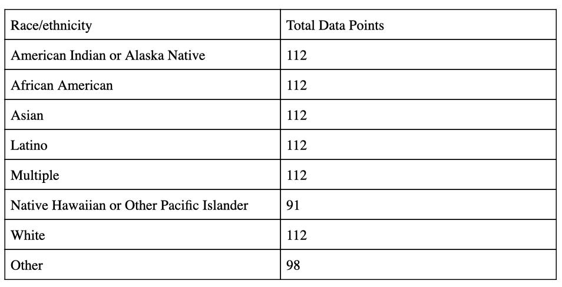
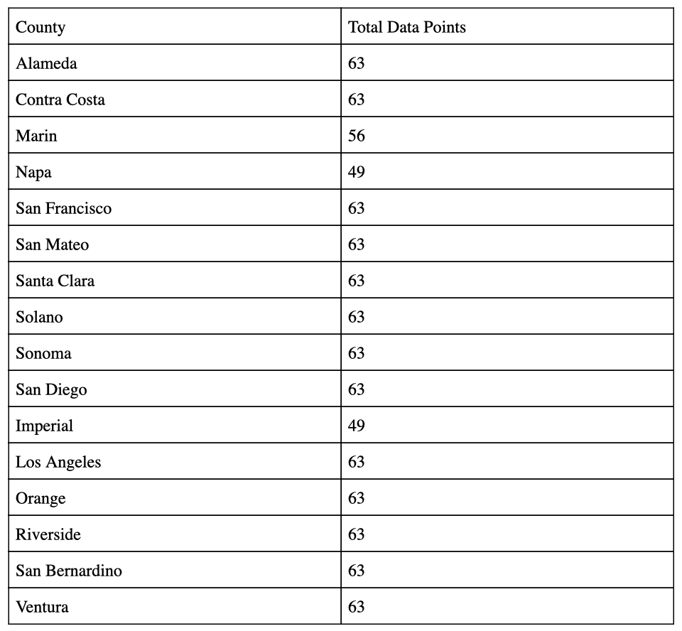
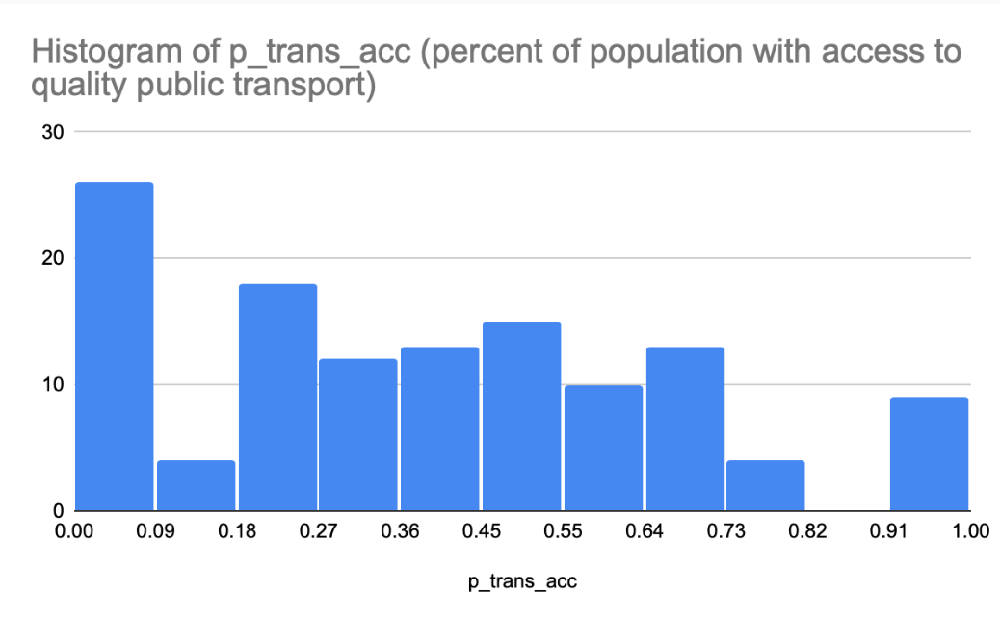

Concise tech report
In order to attempt to make insights into public transportation and access in California we combined two datasets: “Transportation to Work” and “Walkable Distance to Public Transit”. Both our datasets are from the California Department of Public Health (CDPH), accessed through the public California Health and Human Services Open Data Portal. Given that CHHS is a state-level governmental organization that has simply drawn data from a federal governmental organization, the U.S. Census Bureau, we believe these to be reputable sources. This sample is from 16 counties in California, which is comparably small to the rest of California (which has 58 counties total), as well as to the rest of the United States. It is likely representative of California’s residents and their transportation habits, but not necessarily of populations in the entire United States, where climate differences and accessibility to transportation, among others factors, could influence what type of transportation people use to get to work. Sampling biases might influence our data in that people who are illiterate, ill, disabled, or otherwise incapable of filling out the U.S. Census (or unwilling or simply unaware of it) will not be represented in our data.
Coming from the U.S. Census Bureau via the California Health and Human Services Agency (CHHS), the data is clean and contains all that we need in order to complete our proposed project. It contains information for 16 counties in California on the percentage of people, stratified by race, who live within 0.5 miles of quality public transportation, as well as the percentage of people who use any of six different modes of transportation to work: bicycle, car, carpool, public transportation, walk, and working from home. This will allow us to investigate correlations (or lack thereof) between distance to a major public transportation stop and a population’s chosen method(s) of transportation to work in these 16 counties. There are 973 total data points from 16 different counties in California. The following tables illustrate how the data is divided among different groups of interest. As you can see, the data is divided quite evenly among the different racial/ethnic groups and among the counties. We believe that this is enough data to do what we hope to do, especially because we know that the data itself draws from census data - each data point represents entire subpopulations of people.


Furthermore, there are duplicates, just the total percentages of people who use each type of transportation to work for a given county are included, which is the combination of the percentages from the individual racial categories. We will have to ensure not to double-count entries by separating out the totals from the rest of the data. Also, there are also no missing values.
The data is distributed differently across region, race, and mode of transportation to work. The data describes the amount of people who use each mode of transportation to work and the amount of people who have access to public transportation in terms of percent of population. This removes outliers from the data that would be attributed to differences in population. Below, we plotted a histogram of percent of population with nearby access to public transportation. The graph demonstrates that there are not outliers and the data is not normally distributed. Future analysis will break down mode of transportation and access to public transportation by region and race.

We combined and cleaned our datasets in a sqlite3 database (data.sl3). The pub_transit_acess table is a straight import of the “Walkable Distance Public Transit, 2008-2012” excel sheet. The transit_type_usage table is a straight import of the “Transportation to Work 2000-2006-2010” excel sheet.
We joined these tables into a combined_transit table with the following query: [ CREATE TABLE combined_transit AS SELECT pub_transit_acess.geoname AS location_name, pub_transit_acess.geotype AS location_type, pub_transit_acess.region_name, pub_transit_acess.race_eth_name AS race_eth, pub_transit_acess.pop_trans_acc, pub_transit_acess.pop2010, pub_transit_acess.p_trans_acc, transit_type_usage.mode, transit_type_usage.pop_total, transit_type_usage.pop_mode, transit_type_usage.percent FROM pub_transit_acess JOIN transit_type_usage ON pub_transit_acess.geotypevalue = transit_type_usage.geotypevalue AND transit_type_usage.race_eth_name = pub_transit_acess.race_eth_name; ].
We have not had any data type issues, as our dataset came from combining already published data from the California Department of Public Health (no scraping or user input involved). All this data initially came as strings as they were stored as csv, so we had to typecast relevant fields to integers (pop_trans_acc, pop2010, pop_total) and reals (p_trans_acc, percent), but there were no issues with this conversion.
We have had to throw out a good amount of data for two main reasons.
First, the years the data provided. In our initial proposal, we did not realize that both datasets were partitioned into two collection years. The Distance to Transportation data came from 2008 and 2012, and we decided to keep only the 2012 data as there was much more data from that year (4662 data points for 2008 versus 61346 data points for 2012). Because keeping in the 2008 data only allowed us to look at 3 extra counties, we decided more it would be more clear to pick one year and not have to deal with the assumptions we would have to make by using two years of data (thinking about how city demographics and layout change over four years time, constant clarification of which year we are talking about). The Transportation to Work data came from 2000 and 2006-2010, and we decided to use 2000 for a similar reason as above, that 2000 had 5278 data points, whereas 2000 had 59778 data points. Again, we chose just one year for clarity and to eliminate possible assumptions. This disposal mostly affects our data in terms of the years we ended up with, as there are 12 years between the datasets we have joined, which means we are making assumptions that the landscape and transportation demographics have stayed relatively similar over that time. Also, we lost the ability to consider counties that appeared in 2008 and not 2012, and the implications of losing counties because there was less data for them is discussed below.
The second point at which we had to throw out a ton of data is when joining the two datasets. The two datasets had an overlap of 16 counties and 973 data points, but there were many counties in one dataset that did not appear in the others on both sides. No data about a county was valuable to validate or invalidate our hypothesis unless it contained both use of public transport and proximity to public transport, so any county that did not appear in both datasets had its data thrown out. This affects our conclusions as we have less data points to make conclusions off of, but it is also possible that counties that were more difficult to collect data from share certain attributes, and this will skew our results by not getting an accurate spread of neighborhood types. For example, in a lower income neighborhood, people may have less leisure time to fill out surveys, so it would be harder to collect data on people’s transportation to work, and this would result in us having less information about lower income neighborhoods, so their reality would not be reflected in our conclusions.
In summary, the major challenges were dealing with two collection years in each dataset and deciding whether to use one or both of the year sets, and realizing that the data from many counties had to be thrown out as it only appeared in one dataset, and adapting the goals of our project based on this observation. In terms of group vision, we had challenges deciding the actual types of statistics we would like to run and visualizations we would like to produce, which affected how we structured the data. Our next steps will be running statistics on our data, comparing the correlation between walkable public transit and use of public transit for every neighborhood, and seeing if they are directly correlated as we hypothesized, and then looking at the correlation for various demographics and seeing how the correlations changes. Our data collection has greatly reduced the amount of data we expected to have, so we will have to be much more careful about making assumptions based on only 16 specific counties. Also, we were not able to integrate wealth statistics, so we will not be able to discuss this in our analysis like we were planning, unless we are able to incorporate it at a later step.
Links to data source:
https://data.chhs.ca.gov/dataset/walkable-distance-public-transit-2008-2012
https://data.chhs.ca.gov/dataset/transportation-to-work-2000-2006-2010